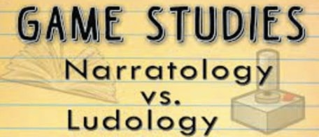
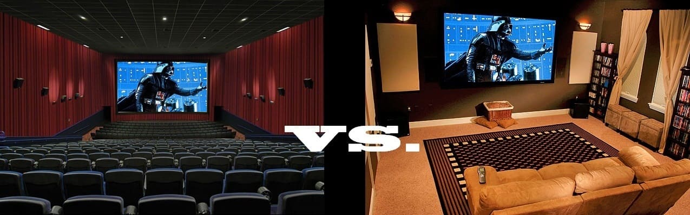
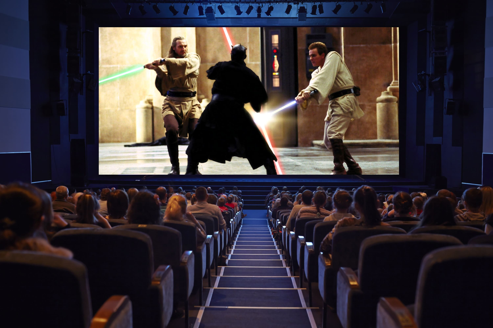
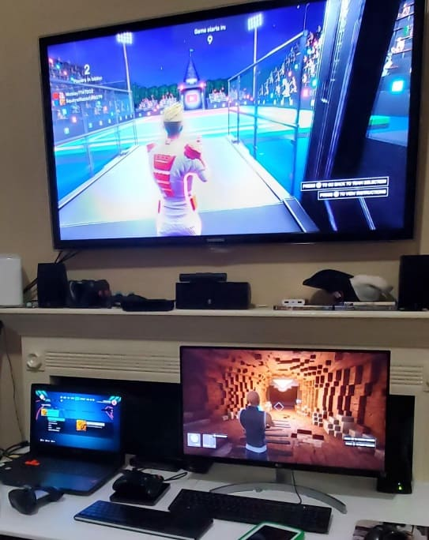

A Ludic Historian Précis
As we delve into the Ludic Historian series, I'll ask you to prepare to transcend the constraints of a traditional chronological account. I want to embark with you on a nuanced exploration where the concepts of ludology (game-playing) and narratology (story-telling) will take center stage.
The Ludic Experience
This isn't going to be merely a journey through time; it's going to be an odyssey through the intertwined realms of gameplay and storytelling. That intertwining is critical. Nicholas Ware wrote an article called "A Whirl of Warriors: Character and Competition in Street Fighter" in which he said:
Many discussions in game studies have centered on binaries. In the 1990s, much was made of the real vs. the virtual. In the oughts, narratology vs. ludology. The solution to both these so-called arguments was transforming the "vs." into an "and," as it will likely be with any binary introduced into game studies.
When you approach the dynamic realm of gaming experiences as a historian, you do often find yourself transcending the traditional narrative/gameplay divide. Instead of confining discussions to the limitations of "narrative" and "gameplay," you find yourself embracing the broader concept of the "gaming experience."
The earlier distinction served its purpose in the nascent stages of game studies, establishing boundaries in uncharted territories. However, as game studies has matured, it's time to move beyond divisive debates and recognize the richness that comes from a more inclusive perspective.
In my Ludic Historian context, however, I'm going to frame the overall "gaming experience" as the "ludic experience."
In embracing the expansive concept of the "ludic experience," I acknowledge a shift from the conventional terms of "narrative" and "gameplay." However, it's crucial to underline that within the realm of the "ludic experience," the art of storytelling retains its profound significance.
By adopting the term "ludic experience," I'm not discarding narrative; rather, I'm broadening the perspective to encapsulate the immersive and interconnected tapestry of gameplay and narrative elements.
As a final point, I'll say that in the tapestry of ludic experiences, I'll draw parallels to the cinematic. I do this because I firmly believe that the interactive nature of games weaves a narrative thread similar to the immersive journey found in movies. So, as you buckle up for a distinctive approach to history — one that unfolds through the dynamic interplay of rules, narratives, and the captivating world of play — this précis will help set the stage.
Starting a Ludic History
Starting a ludic history requires me to consider both the terms "ludic" and "history." In short, my focus on being a Ludic Historian is going to be about looking at the history of games and, within that broad context, a focus on computer games in particular and, even more particularly, on video games. That's simple enough but let's dig down a little deeper.
Delving deeper into the realm of a ludic history involves more than just exploring the evolution of games; it's a journey into the very essence of human interaction, creativity, and technological advancement. In this series, while there's certainly a focus on the more culturally relevant video games, I will try to unravel the intricate tapestry of play, from ancient games etched into the sands of time to the pixelated landscapes of modern video games.
I'm taking this approach because I truly believe that this is a journey that transcends mere entertainment, weaving together threads of culture, psychology, and innovation. As we navigate the labyrinth of what I call Ludic History, I want to examine the societal shifts reflected in game design, the technological leaps that propelled gaming into new areas of interaction, and the intangible yet profound impact of games on the human experience.
Every game — every ludic experience — is a portal to a chapter in the vast book of human playfulness.
The Focus on Ludic
The term ludic derives from ludus, meaning "play." This is a term that's useful in connection with games and, more broadly, rules of play.
-
ludic
adjective
of, relating to, or characterized by play. -
ludically
adverb
in a ludic or playful manner.
In the realm of game studies, the term "ludic" serves as a kind of gateway, guiding us into a fascinating exploration of interactive experiences. This broad field encompasses the analytical approaches of ludology and narratology that I already mentioned.

As mentioned earlier, while some discussions might paint ludology against narratology as opposing forces, a more nuanced perspective reveals their symbiotic relationship. Ludology and narratology, far from being competitors, are integral partners in our quest to understand the intricate tapestry of gaming experiences.
- Ludology immerses us in the very essence of gameplay — the design, mechanics, and dynamics that shape the interactive experience. It delves into how a game functions as a game and the profound impact the resulting gameplay has on players.
- Narratology ventures into the narrative structures of experiences, unraveling the stories woven into mediums like films and video games and examining how these structures influence their intended audience.
Together, ludology and narratology form a harmonious alliance, enriching our comprehension of games by providing a comprehensive view that transcends artificial divisions. In embracing both, we unlock a more profound understanding of how gameplay and narrative converge to create vibrant and multifaceted ludic experiences.
Game Studies
Since I've mentioned game studies let's align on that term. Game studies is a multidisciplinary field that explores various aspects of games, including their design, development, cultural impact, and player experiences.
As a discipline, game studies involves analyzing games from different perspectives, such as sociology, psychology, anthropology, and history. It's like examining a complex tapestry where each thread represents a different aspect of games and gaming culture.
Beyond this, the expansive realm of game studies also extends its gaze to platform studies. This perspective goes beyond the screen, delving into the hardware and software that form the foundation of gaming experiences. It's a holistic examination that considers not only how games are played but also the platforms that host these immersive adventures.
Through all of these fields of study, there's an intriguing intersection where the art of storytelling intertwines with the dynamic world of ludic experiences. As we embark on this historical journey, I want to help you unravel the threads that led to the ever-increasing sophistication of narratives within the gaming realm. As we look into the evolution of storytelling in games, we're going to find that this evolution was predicated upon the ability to immerse us in the experience.
Ambient Heuristics
Beyond the concepts of ludology and narratology, and speaking to that immersion in experiences, as part of my research I want to provide a ludic historian's view of what I'm calling ambient heuristics.
- Ambient: an aspect of the environment that completely surrounds you
- Heuristic: enabling a person to discover or learn something for themselves
This framing device, for whatever reason, just popped into my head as I was doing research. I think the reason for this is because in ludic experiences there's a unique fusion of challenge and reward, a dynamic interplay between skill and chance that keeps us coming back for more. It's the promise of exploration, the thrill of overcoming obstacles, and the satisfaction of achieving goals that creates a gravitational pull.
In the context of ludic experiences, we become active participants, co-authors of stories unfolding in real-time. It's a testament to the power of play to not only entertain but to ensnare our curiosity, sparking a journey where the boundaries between reality and the game can blur, and the joy of the ludic experience becomes a timeless, immersive (ambient) adventure where we always discover for ourselves (heuristics) new ways of being, thinking and doing.
Ludic Experiences Pull Us In
I would, and do, argue that ludic experiences possess a magnetic quality, drawing us into their immersive realms with an irresistible allure. Whether it's the strategic dance of chess pieces on a board or the pixelated wonders of a virtual universe, games have an inherent ability to captivate our attention and engage our minds.
Reinforcing this view for me was the 1992 book In the Blink of An Eye by Walter Murch. Murch was a sound-designer and editor for films and in this book he states his view that the act of engaging with cinema was, in essence, passing through a sort of window:
With a theatrical film, particularly one in which the audience is fully engaged, the screen is not a surface, it is a magic window, sort of a looking glass through which your whole body passes and becomes engaged in the action with the characters on the screen. If you really like a film, you're not aware that you are sitting in a cinema watching a movie. Your responses are very different than they would be with television. Television is a 'look-at' medium, while cinema is a 'look-into' medium.
I feel the exact same sentiment can apply to games. Colin McGinn, a professor of philosophy, wrote a 2005 book called The Power of Movies: How Screen and Mind Interact. McGinn agrees with Murch that there is, in fact, a fundamental distinction between "watching a movie" and "watching a TV."
There remains a significant point of difference between the two types of screen [cinema and TV], arising simply from the physical nature of the TV screen. For the TV itself — a piece of rectangular glass sitting in front of the viewer — is an object that can all too easily become a visual surface in its own right, as when light from the window or a lamp falls across its glassy face.

Consider the above visual and the difference between the two experiences. Regarding that difference and speaking to the TV experience, McGinn continues:
Then we find our attention distracted from the film we are watching to the medium of our watching it; the screen asserts its identity, its solidity, its thingness.
McGinn's statement suggests that a television, unlike a window or a purely immersive experience, remains a tangible object that's always present and demands our attention. This idea highlights the materiality and physicality of the television set. Emphasizing that very point, McGinn says:
We can never quite make a TV screen go away. We are always looking at a bulky piece of hardware that is on the brink of gaining our attention. The TV set is uncomfortably close to being a piece of furniture — not an impalpable magic window onto another world.
McGinn's point, like that of Murch, was that television just can't match the immersive power of cinema. In terms of physical dimensions, even the largest television is generally dwarfed in size and scope by the cinema screen.

As the above visual shows, it's thus the case that the large-sized cinematic "window" in effect consumes our immediate physical environment, essentially consuming us.
The scope and scale can literally pull us into another world. Once the experience is finished — once the movie ends — then the real world floods back into our senses.
One more thought from McGinn on this:
We never quite enter the world of the film that is being broadcast as we do in the movie theatre. The typical television set is just too small to escape its identity as one object in the visual field among many — as just one of the things competing for our attention. By contrast, because of its sheer size, the movie screen can hardly be singled out within the visual field as one object among many; hence its capacity to assume the dimensions of a whole world.
So the common sentiment here is that cinema, at least to a degree not equally possible with television, seems capable of detaching us from our physical environment. Equally, at least in part, cinema is able to usurp our mental environment.
I personally think this is even more true of games and has little to do with the size and scope of our devices, which can encompass tablets, phones, monitors and so on.

So if the "size" of the medium is less relevant to the gaming experience, then what does matter? I believe the immsersiveness has more to do with the quality of varied experience. Not only do you have textual, auditory and graphical elements that can be interleaved but all of that is backed up by a form of interactivity that is lacking in relatively passive media like television or cinema.
All of this intersects a bit with my thoughts on the "Theseus of gaming" idea. The form of interactivity is tied to the identity of the game itself or, rather, the ludic experience that the game provides.
There's a spectrum where ludic and narrative elements work together. Where specifically a given experience is on that spectrum is how much games move from Murch's "look-at" to "look-into." This, to my way of thinking, is how games act with ambient heuristics. It's in the context of those heuristics that ludology and narratology can be looked at as part of an intertwined set of elements that provide a ludic experience.
A Focus on History
The nature of gaming experiences, and how those experiences have evolved, is a way of looking a particular slice of history. All of this focus came to me late in my life as a gamer, but there's a history to all of this that's quite fascinating in its own right, beyond even the ludology and narratology components I've referred to.
I found an interesting parallel on this path to history in Matt Nicholson's 2014 When Computing Got Personal:
The machines themselves may be logical — even maddeningly literal at times — but the way they work is a function of their design, and they were designed by human beings who made decisions that were not always rational, that may have reflected compromises made years earlier and no longer relevant, or were attempts to standardise or improve on what went before. In short, if I was to really understand not only how computers work, but why they work the way they do, I would have to understand their history.
I feel the same way about games and ludic experiences overall. I have to understand their history in order to make sense of them.
As Patrick Hickey, Jr. said in his 2019 The Minds Behind Adventure Games:
Video games and the importance of their history and the people who created them will never go away. If anything, it's all just beginning.
I very much share that sentiment and my work here is one small entry in this ever growing history.
Moving Past Chronicles
In his 2019 book They Create Worlds, Alexander Smith says:
In 2005, Erkki Huhtamo lamented that video game scholarship was stuck in what he called the "chronicle era," in which authors were more concerned with amassing data than analyzing it.
Smith is referring here to the paper "Slots of Fun, Slots of Trouble: An Archaeology of Arcade Gaming" and, sure enough, there Huhtamo says:
The current state of writing on game history could be called its "chronicle era" . . . None of the histories published so far develops a critical and analytic attitude towards its subject.
Huhtamo also wrote a paper called "Resurrecting the Technological Past: An Introduction to the Archeology of Media Art" and his focus there was on excavation. I think that's an interesting approach. Huhtamo states it as such:
The strategies adopted by media archeological artists have parallels with those adopted by archeologically oriented researchers. Media archeological artworks could be even seen as a form of spatialized, conversational "historical writing", as a way of maintaining a dialogue with the technological past.
Along these same lines, in the 2016 book Playback - A Genealogy of 1980s British Videogames author Alex Wade states that the problems with many expositions of videogame history is that they are "only temporally correct and, even then, only within the strict linear-chronology demanded by technological progression and development."
One suggestion is that any such linear-chronological approach could be replaced by one more focused on genealogy. I think that can be helpful because it gets a bit into the identity of games as well.
Alex says that it's not true to say that certain important temporal and spatial histories "have been abridged from the literature" but, rather, in his view, these histories "are lying dormant, occasionally shaken from their slumber by investigators working at the geographical margins and cultural peripheries of games studies."
Obviously a lot of people have done a lot of thought on this and about all I can add is that I very much feel that those who want to move beyond the so-called chronicle approach do have to have some of the sensibilities of the archaeologist and the historian. That's a topic I'll explore a bit in this series when I talk about my methodology.
Speaking of methodology, let's talk about one aspect of this a little bit.
Avoiding a Chronology
While I do plan to look at history, and have a historiographical focus, I don't plan on sticking to a chronology. The challenge with a chronology on a topic like this is that you constantly learn more or find side paths of interest.
As such, this would mean either the chronological accounting would constantly be disrupted or, worse, I would simply avoid talking about something I've discovered because my chronological telling has "moved past" that point.
So If Not Chronology, What?
I'll essentially be dipping into history here and there and presenting findings on various ludic experiences. It's very likely that a given set of articles will be thematically related and thus at any given time, I'll likely be focusing on specific areas of history that are close together.
At some point I will definitely have to provide a way to compose the content of all of this in a more strict chronological fashion. But I would rather let whatever approach I take emerge rather than be applied at the outset.
So the history of this history starts right here. Like any such endeavor, the future is entirely uncertain but what I can say for certain is that the past has many delights in store.